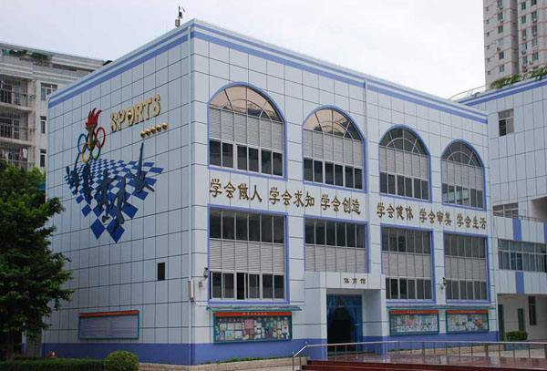

欢迎访问莲花小学2013级4班官方网站
.jpg) 欢迎莲花小学2013级4班的同学和家长访问此网站
欢迎莲花小学2013级4班的同学和家长访问此网站
本网站仅限2013级4班的同学和家长访问
此网站制作人为四班的一名同学用在课余时间学习的html与css知识编写
若本网站侵犯了您的隐私，请联系管理员
六年的学习生活就像一幅流光溢彩的画卷，而老师，正是这幅画中最绚丽的风景。
六年来，是老师陪我们度过了这漫长的小学生涯，当我们失去信心时，是老师让我们重拾信心;当我们跌倒时，是老师鼓励我们重新站起来;当我们骄傲时，是老师把我们的骄傲变成自豪;当我们需要帮助时，是老师不求回报帮助我们...
老师们精心地培养着我们，细心地呵护着我们，无微不至地关心着我们，老师对我们的付出是无私的，而我们的回报却是渺小的。
在此我也想对恩师们说声：“老师，您们辛苦了，谢谢您们!”
莲花小学简介 :

.jpg) 莲花小学是深圳市福田区教育局下属的一所六年制小学。学校建于1993年，现为广东省一级学校、广东省绿色学校、深圳市文明单位、深圳市“花园式园林式”单位，课改专题“综合实践”课的研究在同级同类学校中处领先地位。
莲花小学是深圳市福田区教育局下属的一所六年制小学。学校建于1993年，现为广东省一级学校、广东省绿色学校、深圳市文明单位、深圳市“花园式园林式”单位，课改专题“综合实践”课的研究在同级同类学校中处领先地位。
学校耳濡特区发展的佳音，也目染中华文化的精华；是中西文化的交汇之地，也是现代教育的实验场地。 学校位于深圳市福田区红荔路莲花三村，坐落在风景秀丽的莲花山东麓，地处深圳市城区的中心位置，西望中心广场，东接皇岗大道。
莲花小学校外绿树环抱、繁花似锦；校内是书声朗朗、弦歌阵阵。这里有新颖的课程结构、有丰富的学习内容、有开放的教学方式、有民主的教学作风。教师是博学勤思，乐教善研；学生是文明活泼、乐学自主。
学校以科研兴校、规范管理、教学育人、活动育人、环境育人、群体育人为发展策略；以一切为了学生的成长为宗旨。学校除按部颁计划开齐学科课程外，还开设了以琴棋书画等为内容的37门选修活动课任学生选修。